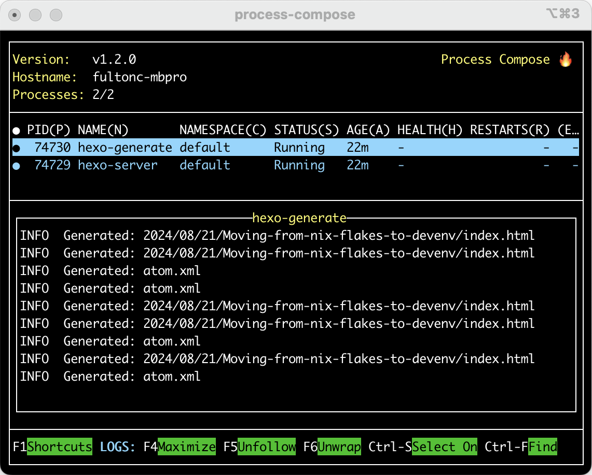

Back in October I started using Nix to run my local authoring environment. I stayed with it, found other use cases for Nix, and then co-presented (with Jason Woodward) at WPCampus 2024 on “Using Nix to Define WordPress Dev and Test Environments.” The monster has definitely escaped the laboratory at this point.
While working up that talk I discovered devenv. I think of devenv as a wrapper or overlay for Nix flakes and it does two things that I immediately found useful:
- It wraps the complex Nix syntax into a set of declarations for adding languages, processes, and services.
- It provides a text-based interface for managing those processes and services.
Hexo needs a NodeJS environment and a few background processes: one task for watching and regenerating the static files, and a simple web server for previewing results. I was able to accomplish this with a flake but it wasn’t perfect. Starting hexo server and hexo generate --watch in my existing shell meant that if I ever used Ctrl-C I killed those tasks, and it wasn’t obvious when they were still running, so I got in the habit of running killall hexo when I was done.
Adding NodeJS support is straightforward; Javascript is a supported language, and there are specific options for enabling yarn:
1 | languages.javascript = { |
Devenv has a concept of a process, which lets you declare, run, and monitor a background task. For Hexo I declare two:
1 | processes.hexo-server.exec = "npx hexo server"; |
The devenv up command executes process-compose by default, and I get a nice text-based window which shows me both processes and their output:

My workflow, then, involves two terminal windows. In the first I run devenv up to start and control the processes, and in the second I run devenv shell, which approximates what nix develop did before. This was easier to setup than the flake, and process-compose is a nice win.